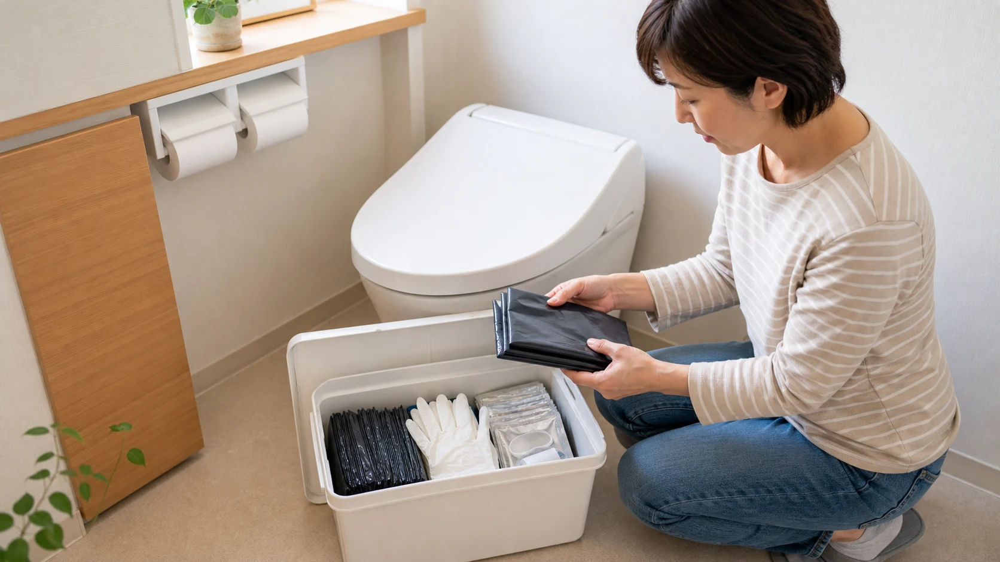
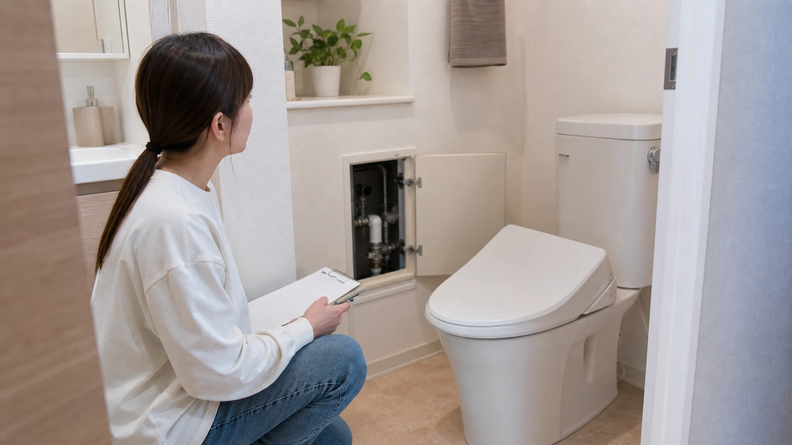
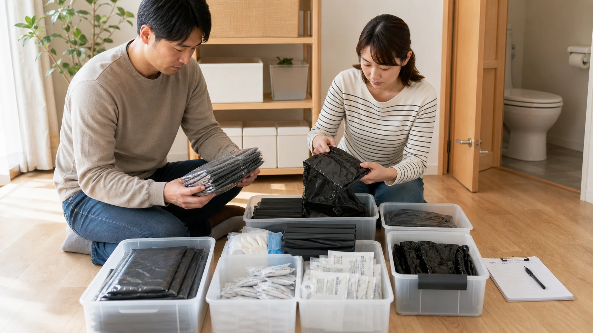
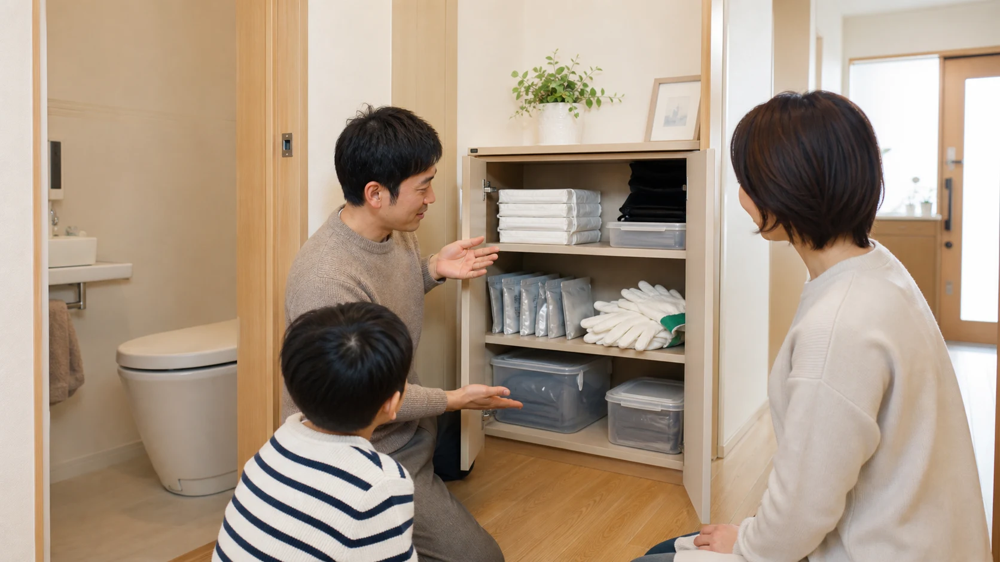

この度の令和8年熊本地震災害によりお亡くなりになられた方々に、心より哀悼の意を表しますとともに、被災された皆様に謹んでお見舞いを申し上げます。
地震の後に行われた二つの調査からは、避難生活の初期にトイレへの対応をどう整えるかが重要になることが分かります。対象や設問の異なる調査を分けて確認しながら、今日から自宅で備えられるトイレ対策を紹介します。
二つの調査から、家庭で備えたい災害用トイレの基本を整理します。
公開日：2026年10月13日
 文｜エイスケ（住宅と教育の専門家）
文｜エイスケ（住宅と教育の専門家）

この度の令和8年熊本地震災害によりお亡くなりになられた方々に、心より哀悼の意を表しますとともに、被災された皆様に謹んでお見舞いを申し上げます。
地震の後に行われた二つの調査からは、避難生活の初期にトイレへの対応をどう整えるかが重要になることが分かります。対象や設問の異なる調査を分けて確認しながら、今日から自宅で備えられるトイレ対策を紹介します。
2016年の熊本地震後、学校のトイレ研究会が熊本県内の6避難所で避難者101人を対象に行った調査では、4月14日・16日の地震直後（2、3日間）に避難所で不便だったことについて「トイレ」が67％で最も多く、「入浴・シャワー」が63％でした（複数回答）。
これとは別に、大正大学地域創生学部教授で、災害廃棄物・災害時トイレを研究する岡山朋子氏が熊本地震の応急仮設住宅居住世帯を対象に行った「避難生活におけるトイレに関するアンケート」（有効回答234）では、発災後にトイレに行きたくなった時期について、3時間以内が39％、6時間以内までの累計が73％でした（同設問n=195）。異なる対象・設問の2調査ですが、いずれも災害発生後の早い段階からトイレへの対応が必要になることを示しています。
「断水していなければ、トイレは普段通り使える」と考えがちですが、これは必ずしも正しくありません。地震で下水管や浄化槽、あるいは自宅の排水管そのものが損傷している場合、水を流すと汚水が逆流したり、階下に漏れたりする恐れがあります。
そのため、大きな地震の後は、自治体や建物管理者から上下水道・排水設備の安全が確認できるまで、通常どおり流せると自己判断しないことが大切です。マンションなど集合住宅では、自室に被害がなくても、建物全体の排水管が損傷している可能性があるため、より慎重な対応が必要です。

学校のトイレ研究会による同じ6避難所101人の調査では、トイレに関する困りごととして「和式便器が多い」が36％、「温水洗浄便座がない」が28％でした（複数回答）。また、日本トイレ研究所の資料では、避難所だけでなく、被害の少なかったマンションなどでも、トイレの水が流せないことで生活に大きな支障が出た事例が報告されています。
こうした経験は、「自宅に被害がなくても、トイレが使えなくなる可能性がある」という前提で備えを考える材料になります。
携帯トイレは、既存の洋式便器などに便袋を取り付けて使用するタイプです。持ち運び可能な便器を用いる「簡易トイレ」とは、内閣府のガイドライン上で別の区分です。備蓄量の目安については、同ガイドラインが必要数の算定に用いる平均的な排せつ回数「1人1日5回」を基準に考えます。
たとえば4人家族で7日分を備える場合、次のような計算になります。
4人 × 5回 × 7日 = 140回分
これはあくまで一つの目安であり、家族の年齢構成や体調によって必要な回数は変わります。家庭の状況に合わせて必要数を準備し、使用期限や保管状態を定期的に見直しましょう。

携帯トイレを購入しても、いざというときに見つからなければ意味がありません。トイレの近くの棚など、使う場所からすぐ取り出せる場所に保管しておくことが大切です。また、使用済みの携帯トイレをどう保管し、どのタイミングで処分するかについても、あらかじめ自治体のごみ収集ルールを確認しておくと安心です。
家族の中で「携帯トイレの場所を知っているのは自分だけ」という状況を避けるため、保管場所や使い方について、家族全員で共有しておくことをおすすめします。

トイレの備えは、一度買って終わりではなく、使用期限の確認や、家族構成の変化に応じた見直しが必要です。加藤篤さんの『トイレからはじめる防災ハンドブック 自宅でも避難所でも困らないための知識』（学芸出版社、2024年）では、自宅だけでなく避難所やマンションでの備えについても具体的に紹介されています。
携帯トイレは、購入するだけで終えず、便袋・凝固剤・処理袋などの中身と、取り付け方、使用後の保管方法を家族で一度確認しておくと安心です。キャンプや車中泊など、日常の機会に一度使ってみると、非常時にも迷わず使えるかを確かめやすくなります。
「防災グッズを買う」という一度きりの行動ではなく、日常の延長として、定期的に備蓄を見直し、使い方を確かめる習慣を持つことが、いざというときの備えにつながります。
※本記事は一般的な防災情報の提供を目的としています。マンション等の集合住宅における排水管の被害確認方法など、個別の判断は管理組合や専門家にご確認ください。
関連する住まいの機能・設備を探す
関連記事
この記事を書いた人｜エイスケ
1986年生まれ。実家の工務店・不動産に10年間従事したのち、教育の世界へ。住宅と教育、両方の視点から「豊かな暮らし」をテーマに執筆します。※本コラムは筆者個人の見解・経験に基づくものです。最終的な判断は各分野の専門家にご相談ください。